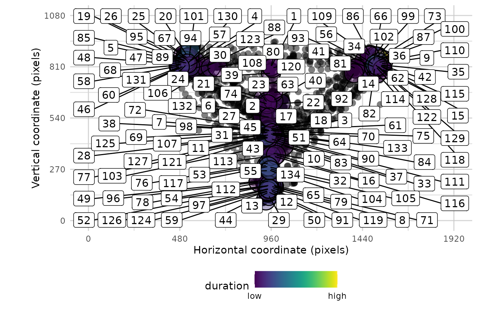
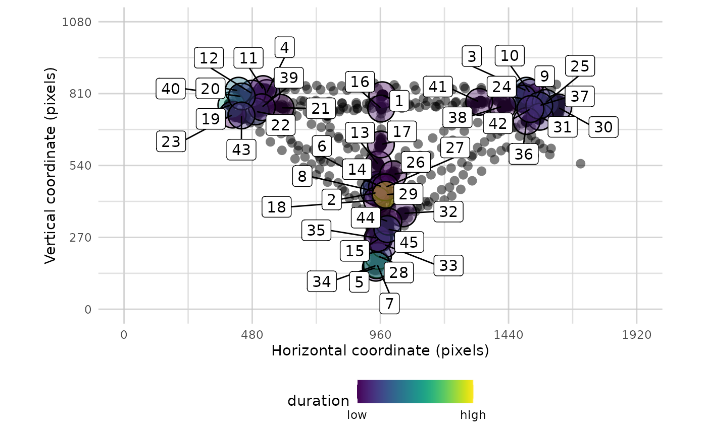

A tool for visualising raw eye-data, processed fixations, and saccades. Can use all three data types together and independently. Fixations can be labeled in the order they were made. Can overlay areas of interest (AOIs) and customise the resolution.
Usage
plot_spatial(
raw_data = NULL,
fix_data = NULL,
sac_data = NULL,
AOIs = NULL,
trial_number = NULL,
bg_image = NULL,
res = c(0, 1920, 0, 1080),
flip_y = FALSE,
show_fix_order = TRUE,
plot_header = FALSE
)Arguments
- raw_data
data in standard raw data form (time, x, y, trial)
- fix_data
data output from fixation function
- sac_data
data output from saccade function
- AOIs
A dataframe of areas of interest (AOIs), with one row per AOI (x, y, width_radius, height). If using circular AOIs, then the 3rd column is used for the radius and the height should be set to NA.
- trial_number
can be used to select particular trials within the data
- bg_image
The filepath of an image to be added to the plot, for example to show a screenshot of the task.
- res
resolution of the display to be shown, as a vector (xmin, xmax, ymin, ymax)
- flip_y
reverse the y axis coordinates (useful if origin is top of the screen)
- show_fix_order
label the fixations in the order they were made
- plot_header
display the header title text which explains graphical features of the plot.
Examples
# \donttest{
data <- combine_eyes(HCL)
data <- data[data$pNum == 118,]
# plot the raw data
plot_spatial(raw_data = data)
# plot both raw and fixation data together
plot_spatial(raw_data = data, fix_data = fixation_dispersion(data))

#plot one trial
plot_spatial(raw_data = data, fix_data = fixation_dispersion(data), trial_number = 1)

# }